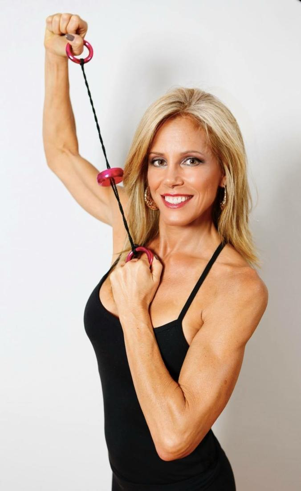

BEST Total Body Workout Fast!
reposted
Do 10-minute workouts make a difference?
The Associated Press Posted: Sep 19, 2008
Got 10 minutes? What about eight? Or six? Seems the hour-long workout has shrunk to a few minutes. Sure, brief exercise is less daunting and easier to do, but is it enough to get results?Stephen Lowrie has received the message to squeeze in exercise wherever he can. He parks far from the entrance, takes the stairs — even lifts weights at his desk.
“I don’t do all these things all the time every day,” said Lowrie, 47, of Bedford, N.H. “If I did I’d be in great shape.”
‘A pound is 3,500 calories. I’m so tired of sending Americans a false message. “Hey, just take the stairs.” ‘— Personal trainer Jillian Michaels
Perhaps. Lowrie’s piecemeal fitness regimen is something that’s been encouraged as even videotaped exercise routines shrink to mere minutes. But as enticing as such programs sound, getting into shape is generally going to take more than a session of eight-minute abs, said Jillian Michaels, a personal trainer on The Biggest Loser.
“Ten minutes?” said Michaels. “Forget it. What are you going to burn? A hundred calories. A pound is 3,500 calories. I’m so tired of sending Americans a false message. ‘Hey, just take the stairs.”‘
The American College of Sports Medicine and the American Heart Association recommend for adults under age 65 a minimum of 30 minutes of moderately intense cardio (such as brisk walking) per day five days a week or 20 minutes of vigorously intense cardio (such as running) three days a week. Strength training should be done as part of the routine twice a week.
To lose weight or maintain weight loss, 60 to 90 minutes of physical activity may be necessary, according to the Centers for Disease Control and Prevention.
Still, micro-workouts are everywhere, from Jorge Cruise’s 8 Minutes in the Morning to Tracey Mallett’s Sexy in 6, a fitness program with six-minute workouts.
Studies show that breaking workouts into mini sessions is as effective as continuous workouts. And considering time is one of the biggest reasons people give for not exercising, the mini-sessions make sense.
“The key isn’t really how long the duration or short,” said Tamilee Webb, best known for Buns & Abs of Steel. “It’s the intensity and the consistency.”
Over the years, efficient exercises have shortened workouts, said Kathy Smith, whose Tummy Trimmers DVD includes short ab workouts. For example, she said a squat with a bicep curl works more than one muscle.
Breaking up workouts ‘less daunting’

The DVD method has also made it easier to package multiple workouts, said Denise Austin, who has more than 80 DVDs under her belt. People don’t have to fast forward and rewind, she said. And the short workout means people can’t make excuses.“The nicest part about it is they are ready to do 10 but stay and do a little more,” said Austin, whose newest DVD, Best Belly Fat-Blasters, is a series of ab workouts. “‘For 10 minutes I can do this.’ The next week they can do 20 minutes and then they’re on their way to a healthy habit.”
For Hiu Chung So, 26, of Arcadia, Calif., breaking up his workouts works. He does 10 minutes of weights in the morning and another 20 to 30 minutes of cardio in the evening.
“It makes it a lot less daunting compared to saying you need to do an hour of exercise,” he said.
The American College of Sports Medicine doesn’t recommend mini sessions shorter than 10 minutes. And David Kirsch, author of The Ultimate New York Diet, questions how only eight minutes in the morning is enough to increase the heart rate, tone the muscles and bring about an overall feeling of wellness.
Endurance demands longer exercises
Ten minutes toning a muscle is long enough, said Ben Quist, founder of Form and Fitness in Grafton, Wis. But for someone who wants to get in shape, 10 minutes three times a week is probably not going to produce the change people are hoping to see.
And once you look closely at those 10-minute routines, some do require more than you’d think. With Mallett’s, the idea is to do more than one six-minute session (three is ideal) plus cardio and change your diet. Austin herself said she does 30 minutes of straight cardio.
According to Michaels, “10, 10, 10 is less than ideal …You need a longer period of exercise to improve endurance.”
But any exercise is better than nothing.
AND if you SpinGym you can get fit anywhere, anytime!
www.SpinGym.comThis feature was a photo gallery on the old site.
Free · live on Zoom every Sunday
The Secret Pitch Formula
Join Forbes live for the Pitch Secrets Masterclass. Over 80,000 people have learned the 7-second hook, the three pitch patterns behind $2.5 billion in sales, and how to close without sounding salesy. Free, with a gift worth $500 for registering.
Sundays, 2 p.m. PT / 5 p.m. ET. Registration and the Zoom link are at pitchsecretstraining.com.